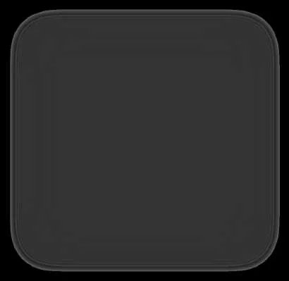
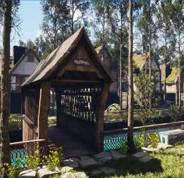
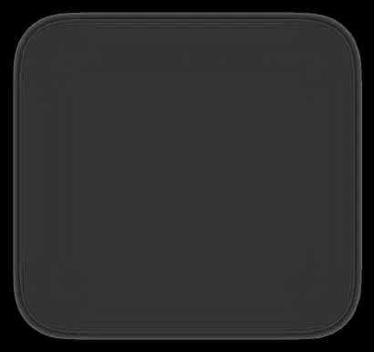
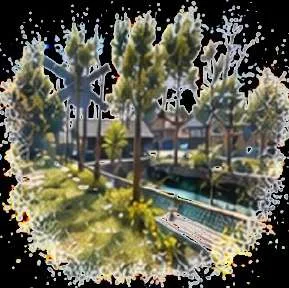
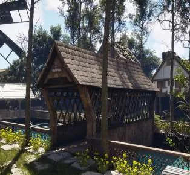

Orbia：生成的视频是否构成一致的 3D 世界？
Orbia: Do Generated Videos Form a Consistent 3D World?
用六种探索—回访模板（前后往返、侧向回访、偏航回访、弧线回访、绕锚点环绕、窥视回访）在统一 rollout 内同时测输入保持、生成内容持久性与 3D 自一致性；参照物分三类——输入场景、模型自己的首次生成观测、以及生成视频本身，深度与位姿由 DA3 估计，锚点由 Qwen VLM 提议 + SAM3/SAM3.1 分割与跟踪校验。全库 720 例（480 短例 + 240 分钟级扩展）、859 个锚点评测目标、约 720p/16 FPS、短例约 22 秒，人工标注与策展超过 300 小时。27 个模型中 SolarWM-H3 总分最高 76.32，Lyra2 74.77、EVOKE 72.70 次之；世界模型组的相机控制均值 57.29 远高于 TI2V 组 32.48；视觉质量与三类一致性层的秩相关只有 0.33（世界模型）/0.21（TI2V），说明画质好并不代表 3D 一致。
best overall score
control gap
quality-consistency rank correlation
human-judge agreement
作者、单位与技术谱系 · Research context
作者与单位
研究脉络
- 交互式视频世界模型评测（WorldLens 等）上游工作关系：本文把世界模型评测从「用 VLM 判记忆与一致性」推进到「用配准 RGB-D 参照 + 锚点 + 留出视角重建」的系统化 3D 一致性评测，并在正文中明确与 WorldLens 的驱动世界保真度评测并列讨论。[官方 HTML 全文（第 2.3、4、5.3 节）]
- 被评测的 27 个交互式世界模型（Gen3C、EVOKE、Lyra2、Genie3、Seedance2.5 等）评测对象关系：Gen3C 用 3D cache 引导生成、EVOKE 用外部 world state bank 存几何、Lyra2 用逐帧几何检索历史帧，本文第 5.1 节指出前五名世界模型中有三个使用显式 3D 记忆，并以此解释它们在输入保持上的优势。[官方 HTML 全文（表 2、第 5.1 节）]
- ScanNet++、SpatialVID、Sekai、MiraData 与 UE 仿真本篇推进（数据基座）关系：本文在四个公开数据集约 11 万源样本上做几何引导的视图选择与锚点验证，再用 48 个 UE 环境渲染候选视频，并自采集补充，构成 720 例基准。[官方 HTML 全文（第 3.3 节、附录 B）]
合作网络
- NUS 与 LIGHTSPEED 的高校—企业共同署名National University of Singapore → LIGHTSPEED关系：共同署名（同一篇论文内的高校与企业作者）[项目页署名信息]
- 跨机构作者节点NUS（主导单位） → HKU、ZJU、University of Macau、CUHK(SZ)、Aalto University、HKUST(GZ)关系：共同署名（跨机构合作边）[项目页署名信息]
- 作者仓库与公开数据发布worldbench/Orbia（作者仓库） → Orbia 基准数据包（Hugging Face）关系：官方发布渠道（仓库—数据集对应关系）[官方 HTML 全文（题图资源与附录 B.5）]
作者、机构与发布渠道均来自论文首页资源行、Author Contributions 与项目页 JSON-LD（论文与官方项目页报告的事实）；lineage 中的「上游/评测对象/数据基座」定位来自正文与附录的表述与引用（基于来源的解读）；论文只给出共同署名与合作关系，没有公开的师生或隶属证据，因此不作此类推断。
方法本质拆解 · What actually changed
是不是微调？——不训练任何模型，只做评测
Orbia 是纯评测基准：论文不训练生成模型，也不微调被评测的 27 个模型，只通过原生接口适配器把同一条探索—回访轨迹翻译成各模型能接受的相机位姿、离散动作或文本指令。被复用的模型只有估计器：DA3 负责深度与位姿，Qwen VLM 负责锚点提议与字幕，SAM3/SAM3.1 负责分割与跨视图身份跟踪。因此表 2 的分数差异来自模型本身与评测协议，不来自本文引入的任何训练权重。
有没有额外约束？——三类参照物 + 锚点级评分 + 统一尺度
评测把参照物显式分成三类：输入场景（输入保持）、模型自己的首次生成观测（生成内容持久性）、生成视频本身（3D 自一致性），每一类只回答一个可判定的问题。几何误差统一用配准参照上的 AbsRel 与共享场景尺度计算，表面一致性要求两次访问对齐后做双向最近点 F-score；锚点按对象逐个评分而不是按帧平均，避免小目标失效被稀释。轨迹侧有硬约束：每条轨迹从 P0 出发、必须回到同一相机位姿 Pr，并通过场景几何的净空检查。
推理/后端到底做了什么？——轨迹适配 + 估计器 + 渲染留出视角
评测时先用适配器把请求轨迹转成模型的原生条件，让每个模型从同一张初始图像生成视频；随后用 DA3 恢复深度与相机，按模板选出参照位姿做跨视图比较，并把首次生成观测的深度投到回访视角做 3D 表面匹配。自一致性一侧还要跑一次重建：用 64 帧上下文让 DA3 预测高斯场景，再渲染 16 个未参与重建的留出视角与生成帧比对。此外按 5 秒窗口滑动统计质量、控制与局部几何，得到时序稳定性；这套流程不含任何针对被测视频的额外优化或后处理。
方法本质是什么？——把「世界是否一致」拆成可分别证伪的三类参照问题
本质是把一个模糊的「一致性」主张分解成三个各自有参照、各自可证伪的检验：与输入比（有没有忘掉已有内容）、与自己比（新生成的内容回访时还在不在原处）、与自身 3D 结构比（生成视图能否被同一场景解释），再用锚点级评分和留出视角渲染把局部吻合与整体一致区分开。它没有做的是：没有给出任何提升一致性的机制，也没有用真值几何替代估计器，因此它只能诊断问题，不能证明某个模型「理解」了 3D 世界。
输入/先验 = 初始图像 + 六模板探索—回访轨迹 + 配准 RGB-D 参照与人工锚点；改变的位置 = 把「一致性」从单一分数改成输入、自生成、自几何三类参照的三套指标，并加锚点级与留出视角重建检查；约束或合并动作 = 统一场景尺度下的 AbsRel/DINO/PSNR/SSIM/LPIPS/F-score 与 25/25/10/10/10/20 的权重聚合、长视频 30/70 加权；直接效果 = 27 个模型的分层排名（SolarWM-H3 76.32 第一、控制分差 24.80、质量—一致性秩相关仅 0.33）。

桥接价值Bridge
桥接价值
本文的价值不在于又一个生成模型，而在于给「生成式/重建式世界的 3D 一致性」提供了一套可复现的验收协议：把输入已有内容、模型自己新生成的内容、以及生成视频自身的内部一致性拆成三类参照分别打分，避免用一个平均分掩盖具体失效。对你当前的研究路线，它直接对应两个日常问题——回环/回访后地图是否真的回到同一处，以及重建或生成结果能否被同一套几何解释。其六模板轨迹与「锚点逐个体评分」的做法可以低成本移植到你的重建与回访评估里，作为最小 A/B 的评测骨架。
方法与模块Method
方法摘要
数据侧：从 ScanNet++、SpatialVID、Sekai、MiraData 约 11 万源样本中筛出 240 例，仿真侧从 48 个 UE 环境渲染 365 段中保留 180 例，自采集 85 段保留 60 例，合计 720 例（480 短例 + 240 分钟级扩展）、859 个锚点目标，短例约 22 秒、统一 720p/16 FPS，人工标注与策展超过 300 小时。指标侧：输入保持用场景/锚点的外观（DINO 相似度、PSNR、SSIM、LPIPS）与几何（AbsRel）以及锚点身份一致性；生成内容持久性用回访外观/深度一致性（把首次观测的深度投到回访视角做 3D 对齐）与表面一致 F-score；3D 自一致性用跨视图深度/特征一致性、4×4 网格上的区域尺度一致性，以及「DA3 用 64 帧上下文预测高斯场景、渲染 16 个留出视角」的重建测试。总分权重为控制 25%、视觉质量 25%、三类一致性各 10%、时序稳定性 20%，时序稳定性对短/长视频按 30%/70% 加权。
可迁移模块
第一，可迁移「自参照回访」检验：对输入图像之外的区域，用模型自己的首次观测作为参照，而不是等一个不存在的真值，这正好可以用来检验你的在线建图在重访时是否自我一致。第二，可迁移「锚点级评分」：不是对整帧取平均，而是逐个锚点算 DINO/PSNR/深度误差，能暴露被帧平均淹没的小目标漂移——你评估回环后局部地图变形时可以直接复用。第三，可迁移「留出视角重建」作为独立的一致性判据：用一组上下文帧重建、再用未参与重建的视角渲染比对，可以把「相邻帧互相吻合」与「整段视频可被单一 3D 场景解释」区分开，这个区分恰是你判断建图是否整体一致时需要的能力。

证据Evidence
关键证据与数字
总排名（表 2）：SolarWM-H3 以总分 76.32 居首，生成内容持久性 70.28、时序稳定性 84.05，Lyra2 74.77、EVOKE 72.70 分列二三；没有任何模型在六个维度上同时领先。分组差距：世界模型的相机控制均值 57.29，TI2V 仅 32.48，差距 24.80 分；最好的 TI2V 模型 Seedance2.5 控制分 43.23，仍远低于 Lyra2 的 81.64。跨层秩相关：视觉质量与三类一致性均值的 Spearman 仅 0.33（世界模型）/ 0.21（TI2V），控制与 3D 自一致性为 0.09（短）/ −0.04（长），说明「画质好」和「跟随相机指令」都不能推出 3D 一致。长探索衰减：五个领先世界模型从首个到末个 5 秒窗口平均掉 26.98 分控制分（SolarWM-H3 91.91→64.50），TI2V 组掉 23.25 分；生成内容持久性在前后往返模板上从 66.21 掉到 40.96。人类校验：90 个样例、20 位标注者的层级排序与自动分数 Spearman 在 0.859–0.921 之间。
边界与下一步Limits & Next Step
边界与风险
第一，所有几何量都由 DA3 估计的深度与位姿支撑，不是传感器真值，因此「3D 自一致性」在底层估计失效时会被连带污染，这一层误差在论文中未单独消融。第二，场景覆盖偏室内外常见环境，六模板里绕锚点环绕是最难的一类（短例世界模型控制从 62.41 掉到 53.15），复杂遮挡与强视角变化下的结论需要外推验证。第三，总分的聚合权重（25/25/10/10/10/20 与长视频 30/70）是设计选择而非从数据导出的最优，换权重会改变排序；论文也明确承认没有任何模型能同时在六层领先。第四，本地归档的媒体是 PDF 回退路径抽取的（官方 HTML 图注抓取未达阈值），图注缺失、分辨率偏低，属提取质量问题而非内容问题。
下一步实验
建议做两件小事。(a) 最小 A/B：在你已有的长序列上，把「相邻帧/相邻窗口一致性」与「回访自参照一致性」分开统计，验证前者是否像本文所示那样掩盖后者的失效——量测用回访处的位姿/深度偏差而不是整体 ATE。(b) 移植锚点级评分：挑 5–10 个稳定地物作为锚点，对回环或重访前后逐个算外观与深度偏差，检验你的回环接受判定是否会放行「整体对、局部漂」的结果。若要更接近本文的能力面，可在现有管线上加一个留出视角重建检查（用一段上下文重建、在未参与重建的视角上渲染比对），作为整体一致性的独立判据，并如实记录 DA3 估计误差的贡献。







